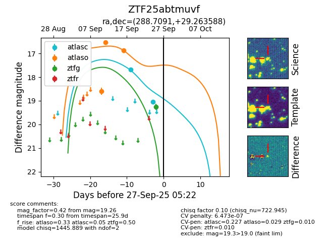
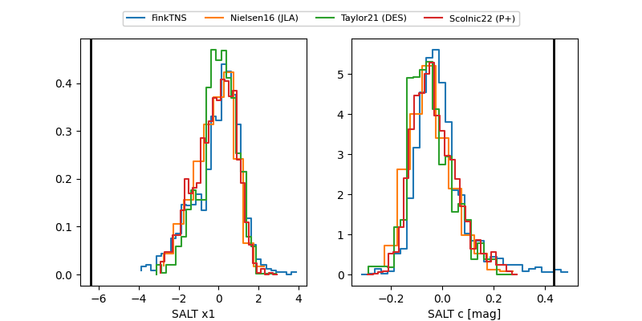

FINK: ZTF25abtmuvf
Lasair: ZTF25abtmuvf
ALeRCE: ZTF25abtmuvf
ZTF25abtmuvf (ztf,fink)
equatorial (ra, dec) = (288.7091,+29.26359)
galactic (l, b) = (61.6556,+8.26594)


last atlasc=19.05, atlaso=16.87, ztfg=19.26
2 atlasc, 4 atlaso, 1 ztfg detections